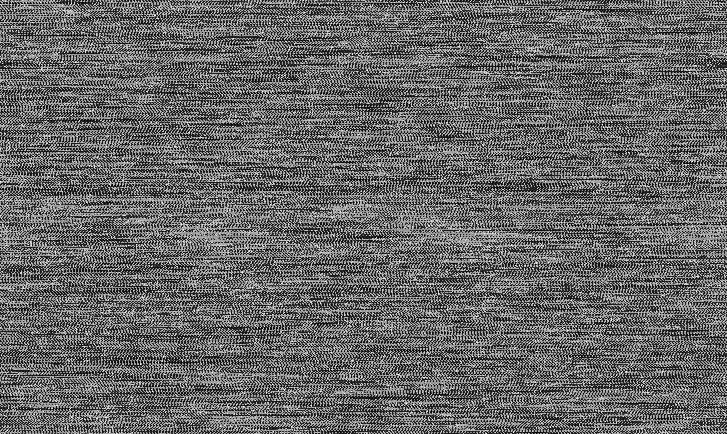

My Artworks
What is New Media Art?

This is the first project I did in Art 74 class. It was a picture of a butterfly which I changed into the mosaic tile to give this aesthetic. It show the power of imagination as we can change a normal picture into something unique and different.
- Feb 2020
Distorted Cat

This was a project called glitched image. I used a picture of the cat and using audacity converted into this distorted image. This project was very different compared to other projects because the artist himself/herself is unaware of the final result after applying the effects.
- Feb 2020
Glitched
Using audacity, I changed a perfect image of a cat into something distorted and rough. That's the power of new media where a beautiful object can be turned into something ugly or bad. I used echo and distortion effect to completely disappear the images of the cat leaving us these glitched images.
- Mar 2020